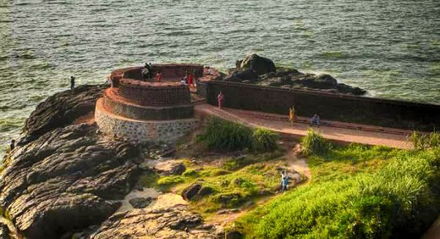
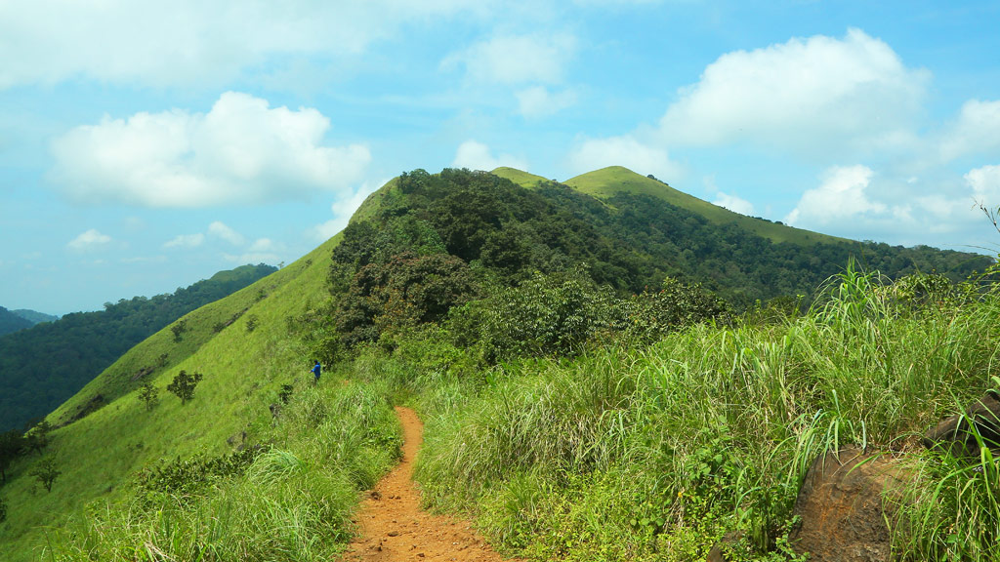

Kasargod is a small coastal town in Northern Pary of Kerala displaying a delightful blend of various religions, culture and bounty of nature. Blessed with majestic forts, lofty hills, beautiful offbeat backwaters, temples and pristine beaches, the town oozes charm and tranquillity from every aspect. It is gaining popularity among people from nearby cities owing to the presence of luxury resorts.
Kasargod is also known for its rich and glorious past, is considered to be home to some of the best-preserved forts in Kerala. The variety of art and culture of the town speaks volume about its diversity. In fact, one can hear about seven languages spoken in the town, Tulu, Malayalam, Kannada, Tamil and Konkani being the most famous ones. Adorned with several tourist attractions, this family-friendly destination with booming coir and handloom industry is worth a visit.

The gentle hills of Ranipuram in Kerala are famous for its trekking trail. Situated at the height of about 750 meters above sea level, this destination has thick forest vegetation and lush green grasslands. The whole place is proposed inside the Ranipuram Wildlife Sanctuary which merges with Talakaveri Wildlife Sanctuary of Karnataka.
Kasargod is a place which is blessed with nature's beauty and tranquility. Parappa Wildlife Sanctuary is one such place which offers both. It also offers natural habitation to many wildlife creatures such as turtle, porcupine, pig, Malabar Hornbill, slender loris and jungle cat.
Hosdurg Fort is a majestic fort which can be seen from distance and was established by Ikkeri Dynasty king Somashekhara Nayaka. There is a unique feature to this fort in form of its round bastion.